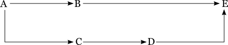

Go has a very strong modelling capability in terms of parallel-serial-parallel-serial (pipeline-stage-job-task) division of work. It supports multiple SCM / pipeline dependencies & allows fetching of artifacts from ancestor pipelines.
Go has good visualisation of things from pipeline level, i.e. everything from pipeline level is well organised for information consumption.
But there was need for visualisation at work-flow level, i.e. we needed a visual way to answer following questions:
To solve this problem we had to come up with a visualisation where the whole work-flow of current pipeline (upstream & downstream) could be layed out as a graph.
When we set out to implement the feature we faced quiet a few challenges:
The algorithm had to be deterministic i.e. given a particular input, it should always produce the same output. This would keep the layout same when user would refresh VSM page. It would also keep the nodes at same position until there is change in configuration making it intuitive for human eye to search for a node.
The algorithm had to run in polynomial time since it would be run frequently (every VSM page load). It should be fast enough that we could put a auto-refresh if we wanted to at some point of time.
The algorithm had to be scalable & reusable so that we could use it to display the whole of config as a Pipeline Dependency Graph (PDG).
The algorithm should facilitate showing each dependency as separate line, i.e. not merge dependencies into one line so that we could show artifact being fetched from different pipeline separately. But it should minimise edge crossings so as to improve readability / visual appeal.
To be able to implement the algorithm we needed to have Graph representation of whole upstream & downstream flow with respect to current pipeline. Building the graph for VSM is more tricky than it first seems like.
When you are building upstream graph you need to consider the build-cause that is stored in database for current pipeline & recursively traverse upstream build-causes to generate the whole upstream graph.
While for building downstream graph we need to see the config to see all pipelines that get triggered off of current pipeline & recurse downstream till we build the whole downstream graph.
Pipeline instances of upstream pipelines & SCM revisions are got during traversal of build cause, the pipeline instances of downstream pipelines are not directly available in any form. So we query for each pipeline instance we know (starting from current pipeline) - instances of downstream pipeline that ran off of current instance. Once we know the pipeline instances we populate stage information for pipeline instances.
The Pipeline dependency graph is essentially a Directed Acyclic Graph (DAG). This would mean any algorithm for laying out DAGs would work.
We decided to implement Sugiyama Algorithm for this. The algorithm goes about laying out the graph in 4 steps:
We assign a layer to every node in graph. Layers are assigned left to right increasing layer number by one for every layer. Ex:

For the above graph, A would be assigned layer 0, B & C would be assigned layer 1, D would be assigned layer 2 & E would be assigned layer 3.
One possible approach is to do a DFS without tracking which nodes are visited already so as trace all possible paths. Tracing all paths is essential in this approach since the child node should be further than any of its parent node so as to avoid back edges. In the above graph E should be assigned layer 3 & not 2 as suggested by B ->E. This would be possible by tracing C ->D ->E. But total number of paths increase combinatorially with increasing number of nodes / edges.
The trick is to do a topological sort of nodes & then loop through the list assigning layer to all child nodes of current node. This would ensure each node is ahead of all its parent nodes since all the parent nodes would be assigned a layer before itself ensuring the current node is assigned a layer ahead of all its parent nodes.
assign_layer_to_nodes()
all_nodes = get all nodes
topological sort(all_nodes)
for each node in all_nodes
if (node.layer == null)
node.layer = 1
end
for each child in node.child_nodes
if (child.layer == null || child.layer < node.layer + 1)
child.layer = node.layer + 1
end
end
end
# move root nodes closer to its children to avoid long edges
root_nodes = get all root nodes
for each root_node in root_nodes
root_node.layer = minimum_layer_of_all_children(root_node) - 1
end
end
In the above graph the edge B ->E spans across 2 layers. We need to avoid edges that cut across multiple layers. This would help us reduce edge crossings (explained in next section). To avoid having edges across layers we introduce one dummy nodes in every layer between source & destination node. So in the above graph we insert a dummy node X between B ->E making it B -> X ->E
create_dummy_nodes()
root_nodes = get all root nodes
visited = new set
for each root in root_nodes
create_dummy_nodes(root, visited)
end
end
create_dummy_nodes(root)
if (visited.contains(node))
return
end
visited.add(node)
for each child in root.child_nodes
if (child.layer > node.layer + 1)
dummy_node.layer = node.layer + 1
node.child = dummy_node
dummy_node.child = child
create_dummy_nodes(dummy_node)
else
create_dummy_nodes(child)
end
end
end
We used BaryCenter algorithm to minimise edge crossings. We initialise all nodes with a depth by traversing the graph in DFS fashion & assigning max. depth of layer the node belongs to at that point of time. Then algorithm traverses the graph layer by layer left to right assigning avg. depth of parents to node & then traverses right to left assigning avg. depth of children to node.
assign_depth_to_nodes()
root_nodes = get all root nodes
visited = new set
for each root_node in root_nodes
node.depth = max_depth_for_layer(root_node.layer) + 1
increment_max_depth_for_layer(root_node.layer)
initialise_depth(node, visited)
end
nodes_at_each_layer = get all nodes arranged by layer
for each nodes_at_layer in nodes_at_each_layer
barycenter(nodes_at_layer, left-to-right)
end
for each nodes_at_layer in nodes_at_each_layer
barycenter(nodes_at_layer, right-to-left)
end
end
initialise_depth(node, visited)
if (visited.contains(node))
return
end
visited.add(node)
for each child in node.children
if (child.depth == null)
child.depth = max_depth_for_layer(child.layer) + 1
increment_max_depth_for_layer(child.layer)
end
end
end
barycenter(nodes_at_layer, direction)
for each node in nodes_at_layer
# parents when left-to-right & children when right-to-left
adjacent_nodes_at_previous_layer = direction.getNodesAtPreviouslayer()
depth = 0;
for each adjacent_node in adjacent_nodes_at_previous_layer
depth = depth + adjacent_node.depth
end
# avg. depth of previous layer
node.depth = depth / adjacent_nodes_at_previous_layer.size()
end
end
There is a corner case where a pipeline can be both an upstream pipeline & a downstream pipeline for a particular pipeline. This can happen due to change in config where A was upstream of B when B ran after which A became downstream of B. This causes a cycle in VSM of A and causes the VSM rendering algorithm to go into an infinite loop. To avoid this we had to put in a cycle detection check before rendering the VSM.
has_cycle()
root_nodes = get all root nodes
visited = new set
for each root in root_nodes
current_path = new set
visited.add(root)
current_path.add(root)
has_cycle(root, visited, current_path)
end
end
has_cycle(node, visited, current_path)
if (visited.contains(node))
return
end
if (current_path.contains(node))
throw new CyclicDependencyException()
end
current_path.add(node)
for each child in node.child_nodes
has_cycle(child, visited, current_path))
end
current_path.remove(node)
visited.add(node)
end
Its possible that there are multiple instance of upstream / downstream pipeline for a pipeline. Ex:
G -> A -> B -> D
| |
+ -> C ---+
In the above setup B & C could have run off of different instances of A. Also there could be multiple instance of D which ran off different instances of B / C. These cases are handled by merging multiple instance of a pipeline into one box with a ..more.. link while the dependency link remaining the same. It could have happened that the different instances of pipeline had different material configuration. But this case is not handled.
The same remains the case with SCM. Ex:
+-> A -> E
G |
+-> B ---+
It could have happened that A & B ran off of different revisions of G. We merge the revisions into one list & show it in SCM revisions popup.
In the setup some upstream / downstream pipeline could have been deleted or user might not have access to the pipeline. Which is shown as a grey box. Currently VSM only shows upstream & downstream of a pipeline instance, i.e. everything is wrt to a pipeline instance.
We could render VSM for a commit. This would be useful in a few scenarios. Ex: If the setup is like below.
G -> A -> C
| |
+ -> B ---+
When you see VSM for A you will not see B while if you see VSM for B you will not see A. The only way to see both of them is to see VSM for C. But if we could show VSM for a commit then that VSM would contain both A & B that triggered off of that commit. Its more intuitive to trace your commit in this view.
The algorithm can be directly reused to lay the whole config. It would be useful to show the whole CI/CD setup of an organization. It would also be useful during pipeline creation. Ex: you can create a new pipeline by dragging & dropping dependencies into the new pipeline etc.